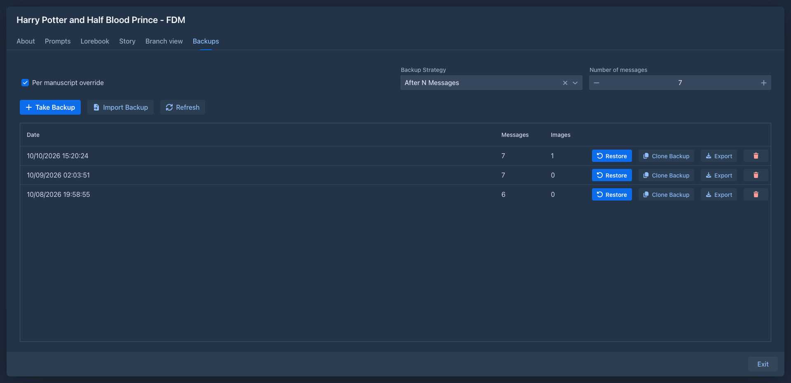
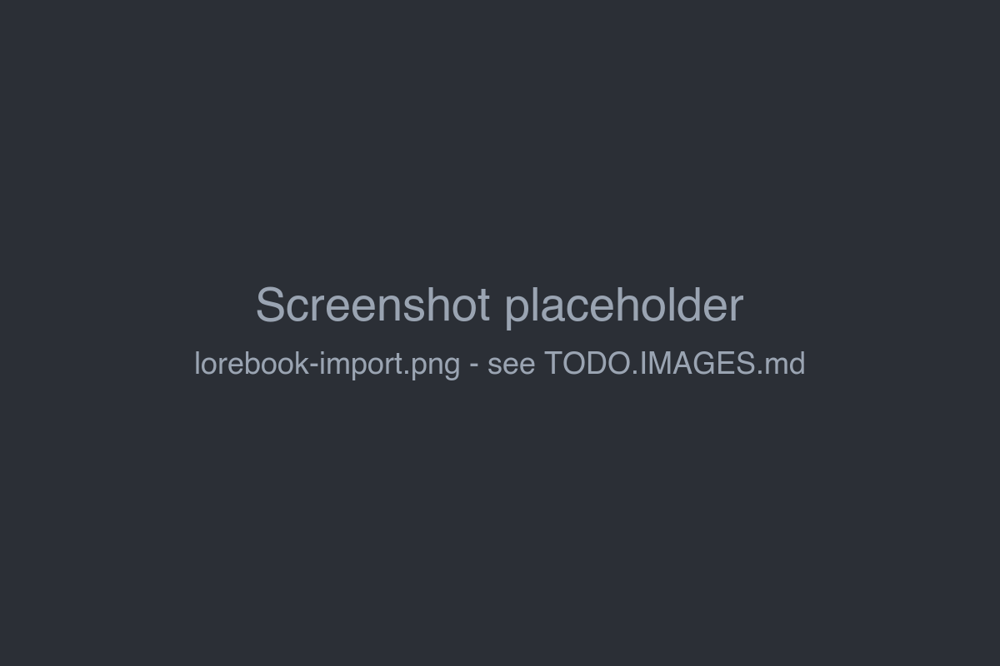
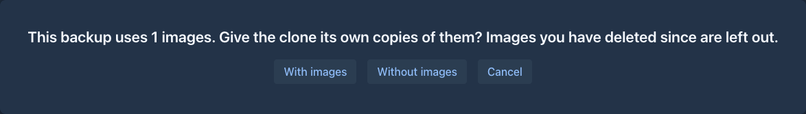
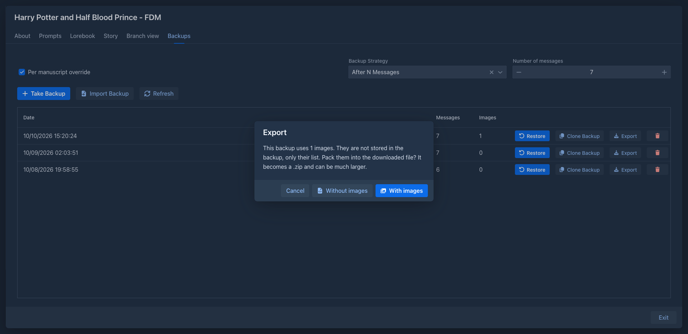

Book backups
A book backup is a snapshot of one book: its settings and prompts, all parts in all branches, summaries, tags and the lorebook. Use backups to go back to an earlier state of the story, to make a copy of a book, or to move a book to another Marginalia installation or user.
Book backups are separate from the database backups that administrators make of the whole installation.

Taking a backup
On the Backups tab of the book, click Take Backup. The backup appears at the top of the list with its Date the number of Messages (parts) it contains and the number of Images (the pictures of the parts) its parts use.
Backups can also be taken automatically, see
Pictures in a backup
A backup remembers which pictures the parts have (and their captions), but not the picture files. This keeps
backups, and the automatic ones, small. The pictures stay in your Resources. To take the pictures
with a backup you pack them when you
Restoring a backup
Click Restore next to the backup and choose:
Restoring replaces all parts of the book with those from the backup. Parts written after the backup are gone. Take a backup of the current state first if you might want it back.
The book window closes and opens again with the restored book.
The pictures of the restored parts are the ones the backup lists, as long as you still have them in
Resources. A picture you deleted since is gone from the part. Restoring does not bring back deleted
picture files, unless the backup comes from an export with pictures that you
Model and protocol are looked up among your inference providers and protocols: first the exact one from the backup, then one with the same name. If neither exists, the book keeps its current model or protocol.
Lorebooks in the backup are compared with yours. When a lorebook with the same name but a different identity exists, Marginalia asks for each one whether to Link to existing or Create new from the backup. Lorebooks that you don't have at all can be imported (Import) or left out (Don't import).

Copying a book
Clone Backup creates a new book from the backup, under a name you enter. The original book is not changed. Use it to try something radical with a copy of the book, or to start a new book from the same opening.
If the backup uses pictures, Marginalia asks With images or Without images:
-
With images gives the new book its own copies of the pictures (the same files, new entries in Resources), so deleting or replacing a picture in one book does not touch the other. Pictures you have deleted since the backup was taken are left out.
-
Without images clones the text only.

Exporting and importing
Export downloads the backup as a JSON file (<book name>_backup.json). Keep it as an extra copy, or take it to
another installation.
If the backup uses pictures, Marginalia asks whether to pack them:

- Without images downloads the JSON right away, as above. The pictures are only listed in it.
- With images packs the backup and all its pictures into a ZIP file (
<book name>_backup.zip). A progress bar shows how many pictures are done; the file is built on disk one picture at a time, so even a book with many large pictures does not use much memory. When it is ready, click Download. The file is kept only until you close that dialog.
If a picture can't be packed because you deleted it or its file is missing, the dialog tells how many were left out.
The ZIP contains backup.json (the same JSON), resources.json (the list of the pictures) and the pictures. You don't
have to unpack it: both ways of bringing a backup back accept the .zip as well as the .json.
There are two ways to bring a backup file back:
-
Import Backup on the Backups tab adds the file to the backup list of this book. Nothing changes until you Restore it.
-
Import Backup as New Book in the Settings tab creates a new book from the file.
Both accept a .json or a .zip file. The file is uploaded to the server and read from there, so a big backup is
no problem.
Importing a backup
When the file is a ZIP with pictures, the pictures are added to your Resources first, and the backup then uses them. A picture you already have (the same file) is not stored again: the existing one is used, so importing your own export does not add anything. A JSON file without pictures is imported as it is.
Importing as a new book gives the new book its own entries in Resources, also when you already have the same pictures: the entries point to the same files, so no disk space is used twice. If the file has no pictures (a plain JSON), the new book gets copies of those pictures that the file lists and that you still have; those you don't have are left out. Anything in the file that is not a usable picture (not a PNG, JPEG, GIF or WebP, or too big) is ignored.
Importing a backup as a new book
- Open the Settings tab and click Import Backup as New Book.
- Enter the New Book Name - the upload is enabled once the name is filled in.
- Upload the backup file.
- Decide about the lorebooks, if asked.
The new book appears in the Books tab.
Deleting backups
The trash button removes a backup for good. Automatic backups are not rotated: they stay until you delete them.
Automatic backups
Marginalia can take a backup on its own while you write. Set the default for all books in Settings → General Settings → Backup Strategy:
To use a different strategy for one book, check Per manuscript override on its Backups tab and choose the strategy and the number there. Unchecking it returns the book to the default from Settings.
Automatic backups are taken only after a part is generated, so a book you only read doesn't get new backups.
Where backups are stored
Each backup is a JSON file in the Marginalia data folder:
~/.marginalia/data/<your login>/backups/manuscripts/<book id>/With the Docker version this is ./data/data/<login>/... on the host. The files
are not in the database, so a database backup doesn't contain them. Include
the whole .marginalia folder in your own backups.
The picture files are not in the backups either, they are in the data/<your login>/images folder next to
backups. They are also not in a database backup, see there.